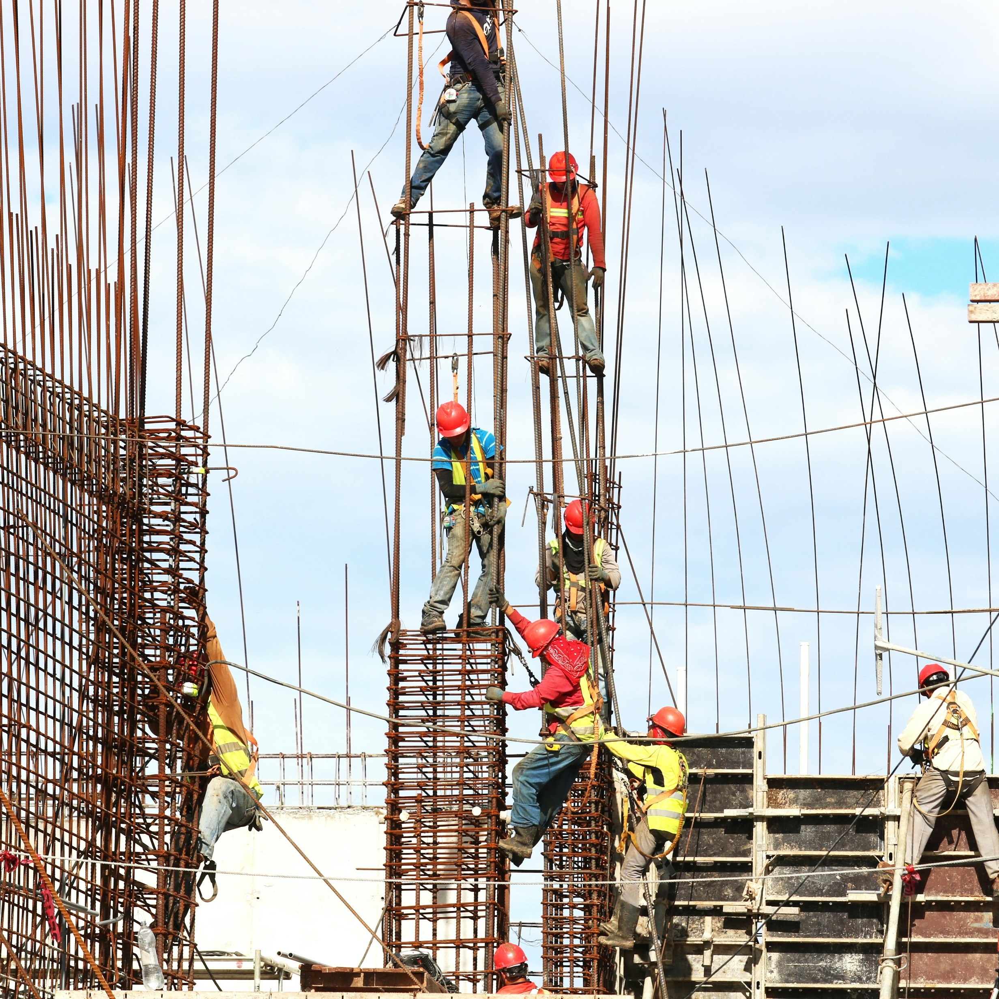
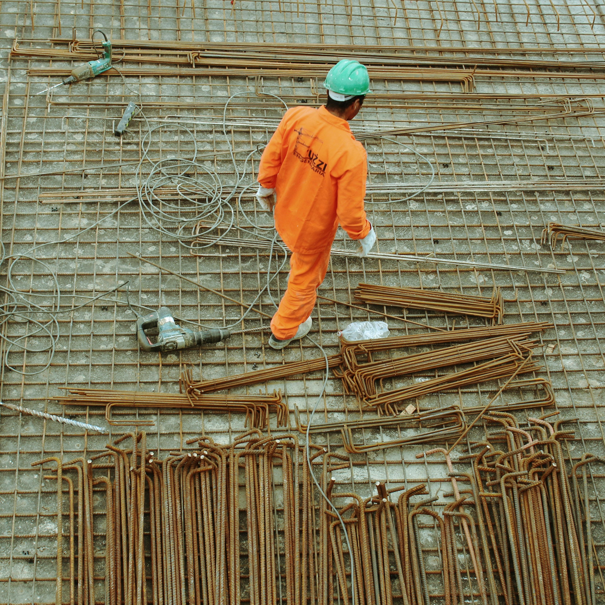
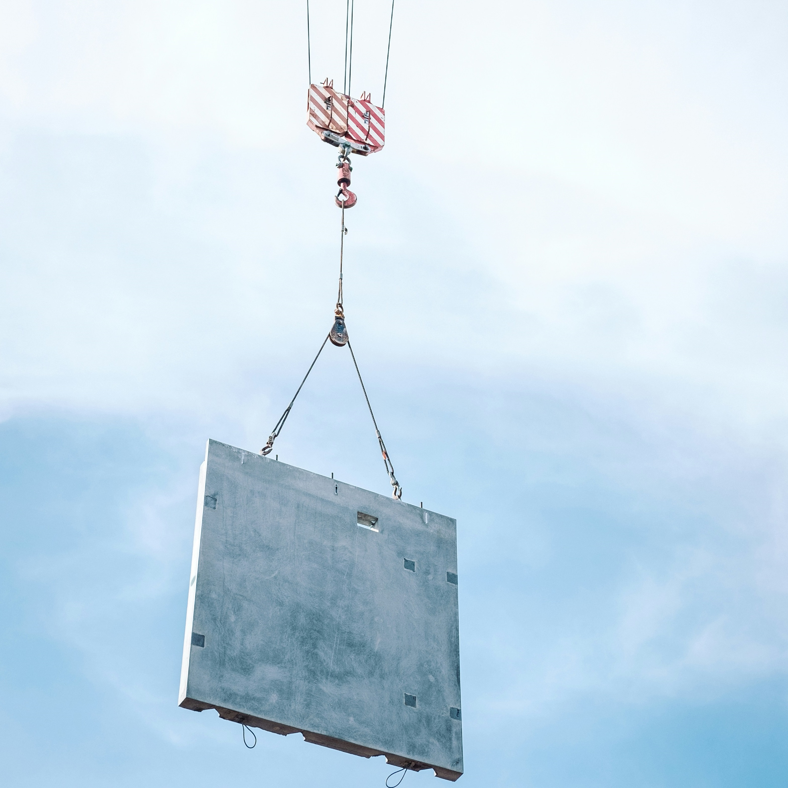
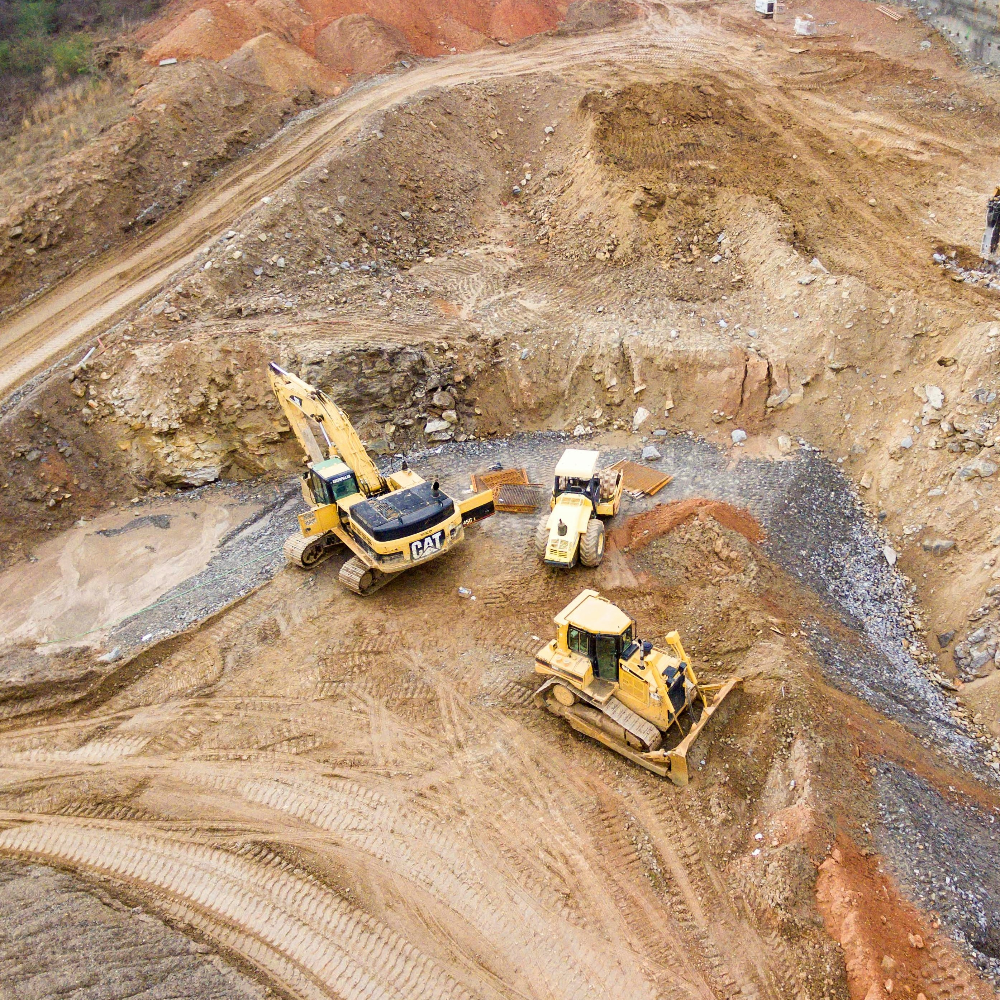
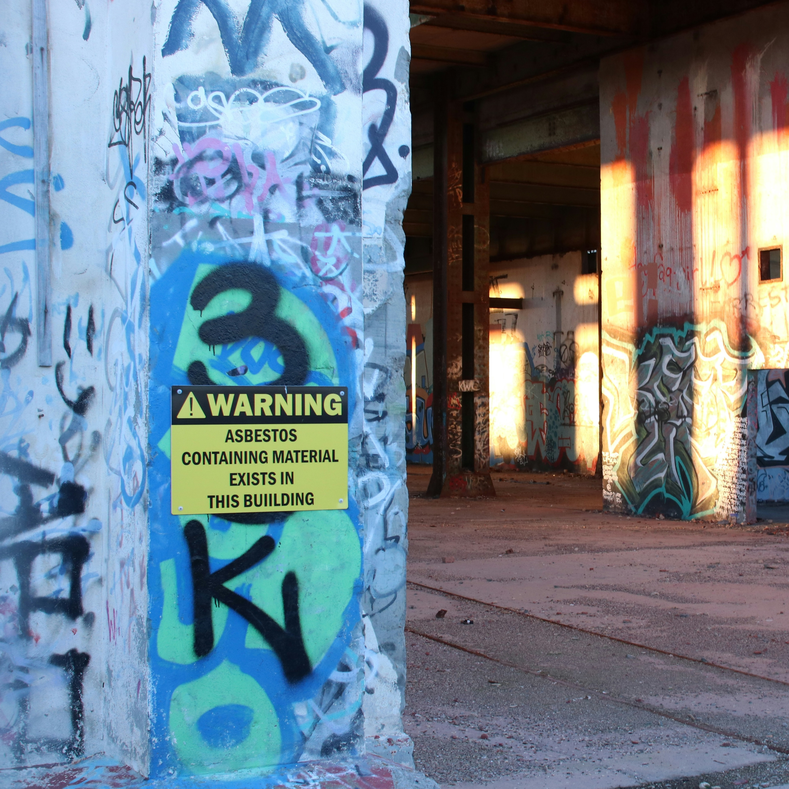
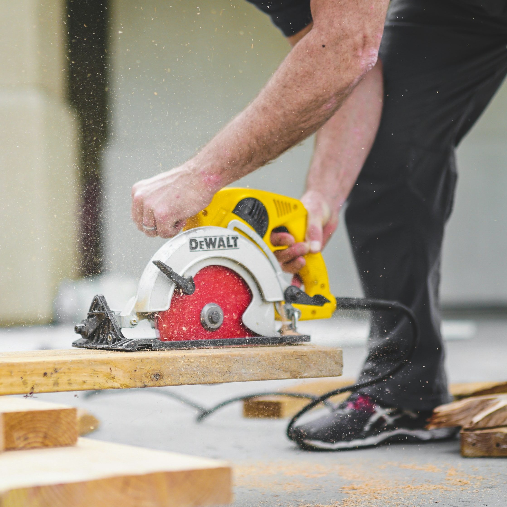

Los trabajos de construcción implican diversos riesgos de los cuales los trabajadores
necesitan estar conscientes y tomar precauciones para mitigarlos.

Caídas
Trabajar a alturas, como en andamios, escaleras o azoteas,
representa un riesgo significativo de caídas. Los trabajadores deben usar equipo de protección contra caídas,
como arneses, barandillas y redes de seguridad, para prevenir caídas.

Resbalones, tropiezos y caídas
Superficies irregulares, escombros y condiciones resbaladizas pueden llevar
a resbalones, tropiezos y caídas. Los trabajadores deben mantener las áreas de trabajo limpias y organizadas,
usar calzado adecuado y tener precaución al caminar sobre superficies mojadas o irregulares.

Accidentes por impacto
Los trabajadores pueden ser golpeados por objetos que caen, vehículos en movimiento o equipo.
Para prevenir accidentes por impacto, los trabajadores deben usar ropa de alta visibilidad,
usar barricadas y señales de advertencia, y asegurarse de que los operadores de equipos pesados
tengan una visibilidad clara de su entorno.

Riesgos eléctricos
Los sitios de construcción a menudo involucran cableado eléctrico, maquinaria y equipos,
lo que puede representar riesgos de electrocución. Los trabajadores deben recibir capacitación en seguridad eléctrica,
usar herramientas aisladas y evitar trabajar cerca de cables eléctricos en vivo o equipos.

Accidentes por atrapamiento
Los trabajadores pueden quedar atrapados entre equipos, maquinaria o materiales.
Para prevenir estos accidentes, los trabajadores deben seguir procedimientos de bloqueo/etiquetado,
usar protectores y barreras de máquinas, y evitar colocarse en puntos de pellizco o espacios confinados.
Cargas pesadas y sobreesfuerzos
Levantar objetos pesados, movimientos repetitivos y posturas incómodas pueden llevar a
distensiones, torceduras y lesiones musculoesqueléticas. Los trabajadores deben usar técnicas de levantamiento adecuadas,
tomar descansos regulares y usar dispositivos mecánicos al manipular cargas pesadas.

Exposición a sustancias peligrosas
Materiales de construcción, productos químicos y sustancias peligrosas pueden representar riesgos para la salud
a través de la inhalación, ingestión o contacto con la piel. Los trabajadores deben usar equipo de protección personal (EPP) apropiado,
seguir procedimientos de seguridad para el manejo y almacenamiento de materiales peligrosos, y recibir capacitación sobre el uso seguro de productos químicos.

Estrés por calor
Trabajar al aire libre en climas calurosos puede llevar a enfermedades relacionadas con el calor como agotamiento por calor
y golpe de calor. Los trabajadores deben mantenerse hidratados, tomar descansos frecuentes en áreas sombreadas o frescas,
y usar ropa ligera y transpirable.

Exposición al ruido
Los sitios de construcción pueden ser entornos ruidosos, exponiendo a los trabajadores al riesgo de pérdida de audición.
Los trabajadores deben usar dispositivos de protección auditiva como tapones para los oídos o orejeras cuando estén expuestos a
ruido fuerte durante períodos prolongados.